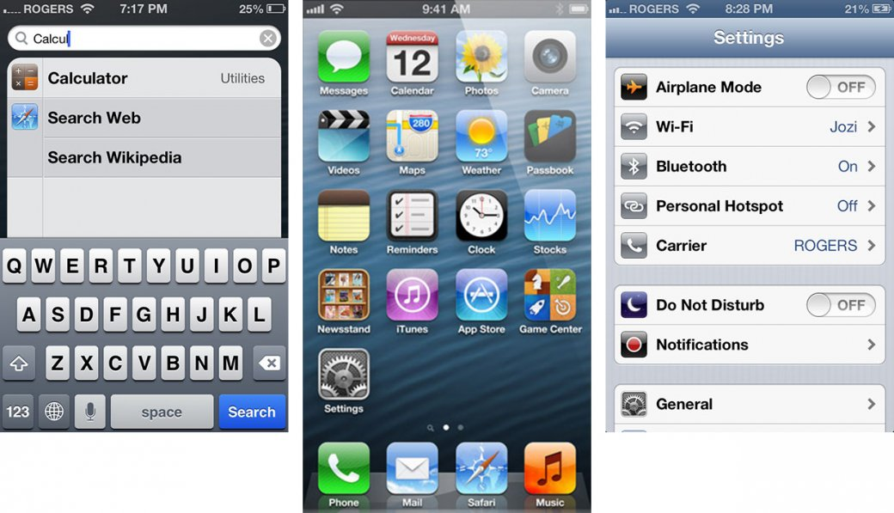
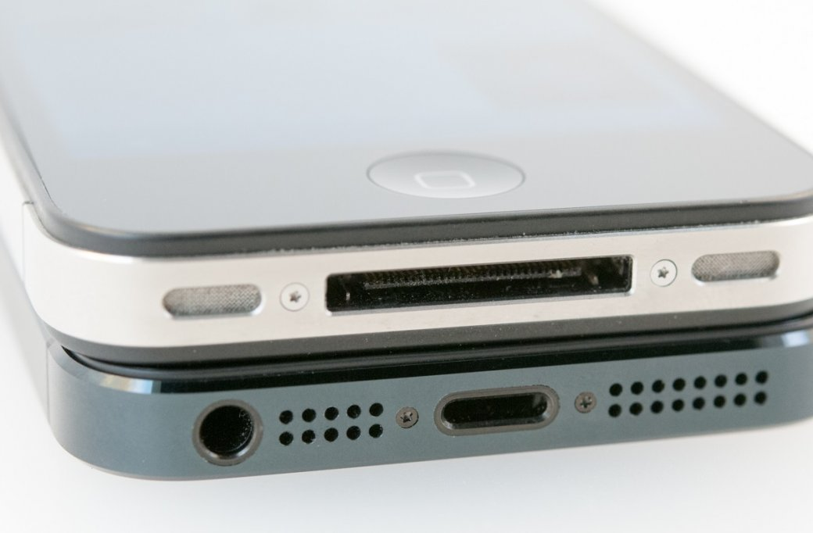
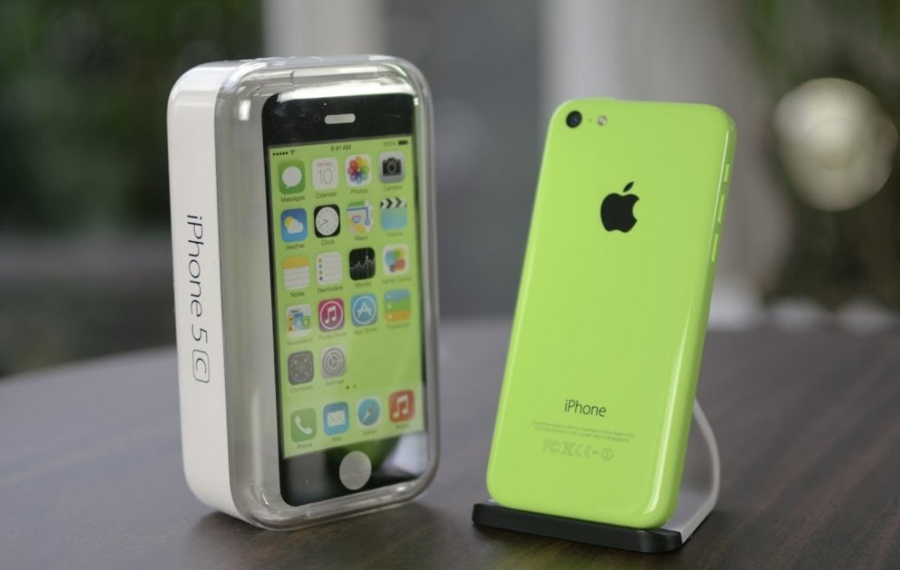
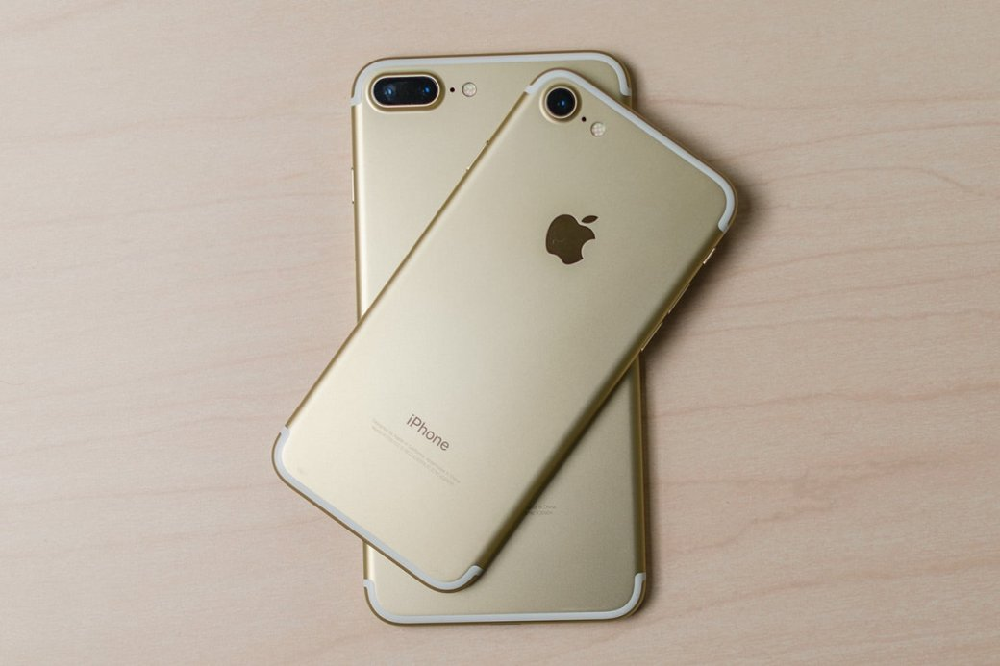
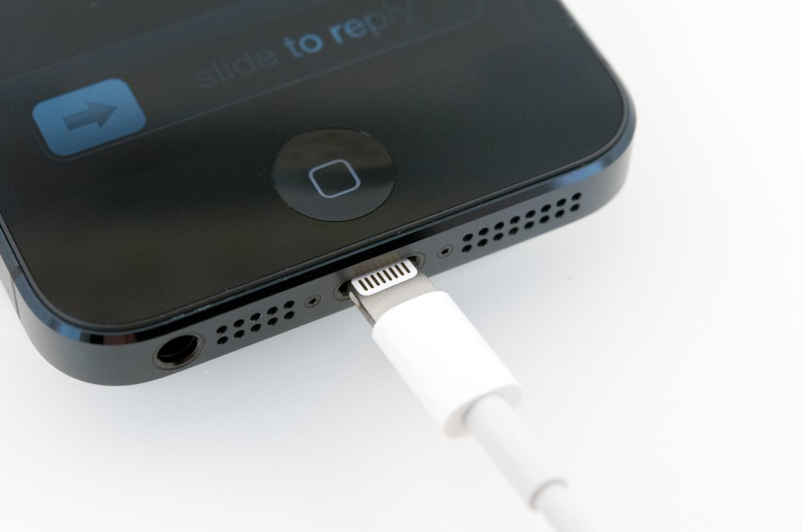
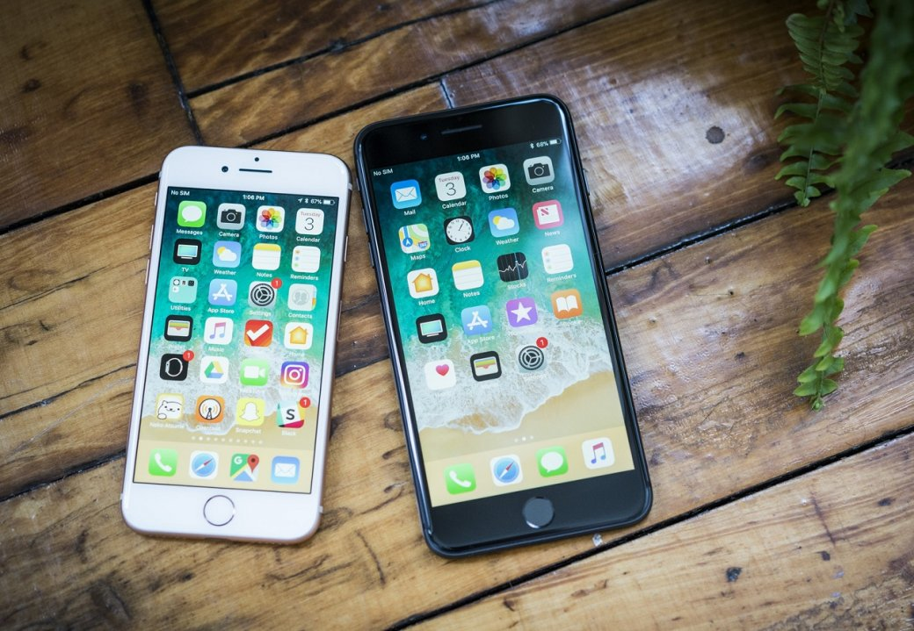
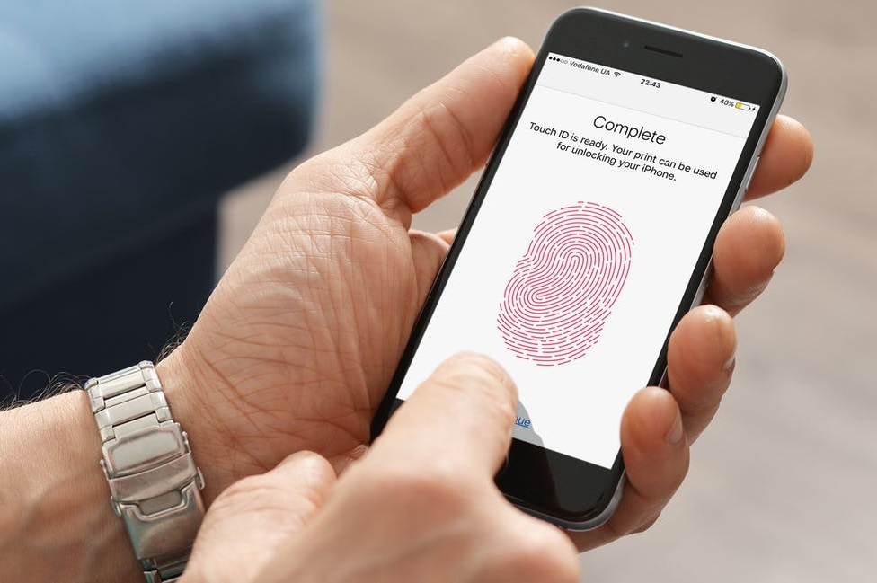
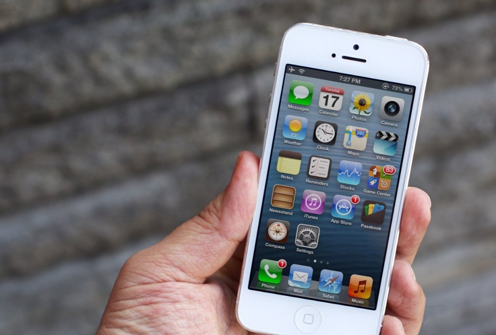

В 2007 году Apple выпустила iPhone — сенсорный мобильный телефон нового поколения, который задал направление всей мобильной индустрии и вывел популярность смартфонов на новый уровень. За прошедшие 11 лет iPhone пережил взлеты и падения, реинкарнации и переосмысления, но почти всегда это устройство задает моду на внешний вид смартфонов, которому следуют другие производители. В этом материале собрано 10 функции и особенностей флагманов Apple, которых в них больше нет. Давайте вспомним, что было у айфонов прошлого и чего уже никогда не будет в моделях будущего.
Скевоморфизм
Дизайн первых операционных систем iOS использовал элементы скевоморфизма — максимально возможного копирования стиля значков с настоящих предметов. Например, телефонная книга выглядела как блокнот для записей, YouTube — как старый телевизор, а календарь — как его реальный настенный вариант. Последней системой со скевоморфизмом была iOS 6, а начиная с iOS 7 и выхода iPhone 5, дизайн стал проще и минималистичней. Такие изменения понравились пользователям Apple далеко не сразу, но потом все привыкли, а схожий минимализм прочно обосновался в мобильном интерфейсе любого производителя.
30-пиновый разъем
Широкий и далеко не всегда удобный 30-пиновый разъем использовался в гаджетах Apple достаточно долго — с ним вышли первые плееры iPod и первый iPhone. Последним смартфоном с этим входом стал мегапопулярный iPhone 4S. А с выходом microUSB на Android-смартфонах, Apple выпустила удобный и компактный Lightning-разъем. Первой моделью с этим входом стал iPhone 5.
Пластиковый корпус
Apple часто использовала в своих смартфонах легкий и дешевый в производстве пластик. Корпусы популярных моделей iPhone 3G и iPhone 3GS были частично пластиковыми и никого это не смущало. Поэтому в 2013 году компания выпустила бюджетный iPhone 5C с разноцветными пластиковыми крышками, но продолжения эта идея не получила.
Приложение Game Center
С выходом в 2010 году iOS 4.1. на iPhone появилось приложение Game Center — сообщество мобильных геймеров, где люди оценивали игры, общались и заводили друзей. С выходом в 2016 году iOS 10 функционал Game Center полностью заменил App Store. Хотя в настройках любого современного iPhone до сих пор есть раздел Game Center.
Алюминиевый корпус
Первый iPhone получил алюминиевую заднюю крышку, но до 2012 года и выхода iPhone 5 Apple почти не использовала этот легкий и прочный материал в корпусах своих смартфонов. После этого были алюминиевые iPhone 6 и 6s, а также iPhone 7 и 7 Plus, но начиная с iPhone 8, iPhone 8 Plus и iPhone X, которые вышли в 2017 году, корпуса флагманов Apple стали стеклянными.
3,5-мм аудиоразъем для наушников

Последний раз классический 3,5-мм аудиовход использовался в смартфонах iPhone 6S и 6S Plus. Вышедшие в 2016 году iPhone 7 и 7 Plus лишились этого разъема в пользу фирменного Lightning-порта. Большинство Android-смартфонов до сих пор используют этот вход, но все чаще новинки и особенно флагманы, выходят без него и с USB Type-C.
Физическая кнопка «Домой»
Фирменная и всегда узнаваемая кнопка Home стояла на смартфонах Apple с 2007 по 2015 годы. Последними моделями с физической клавишей «Домой» были iPhone 6 и 6S, а в следующих флагманах iPhone 7 и 7 Plus ее заменили на сенсорную Home с тактильным нажатием и вибрацией.
Сенсорная кнопка «Домой»
Новенькая сенсорная кнопка продержалась всего в двух поколениях смартфонов Apple: вышедших в 2016 году iPhone 7 и 7 Plus и iPhone 8 и 8 Plus, которые представили в 2017-м. С выходом в том же году iPhone X и в 2018 году iPhone XS, XS Max и XR, производитель из Купертино отдал предпочтение управлению жестами, убрал сенсорную кнопку и увеличил размер дисплеев.
Touch ID
Вместе с уходом тактильной кнопки «Домой», осталась не у дел и встроенная в них система распознавания отпечатков пальцев Touch ID. Это была простая, удобная и надежная система защиты смартфона от взлома, которую оперативно переняли все аппараты на Android. А в 2018 году дактилоскопический датчик стоит даже на бюджетных смартфонах, но в будущем его заменит подэкранный сканер отпечатков пальцев, который сейчас ставят только на флагманы.
Широкие рамки вокруг дисплея
Когда-то iPhone узнавали по широким отступам вокруг небольшого экрана. Но в 2017 году вышел iPhone X с его широкоформатным дисплеем и тончайшими рамками со всех сторон. С тех пор Apple оставила отступы в прошлом, а увеличенные экраны свежих iPhone XS, XS Max и XR занимают почти всю лицевую часть.
Источник: Techradar